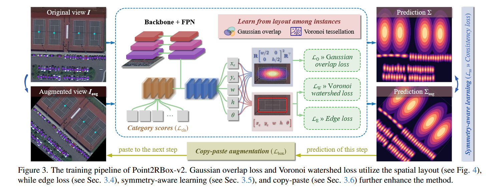

《Point2RBox-v2: Rethinking Point-supervised Oriented Object Detection with Spatial Layout Among Instances》阅读笔记
简介
《Point2RBox-v2》创新性地利用空间布局来学习物体边界。因为有向目标检测场景中大多数目标是不会重叠的，根据这个特性设计损失函数，架构新的网络。
论文使用的方式：通过高斯分布表示物体，然后通过缩小高斯重叠来为物体构建矩形框的上界；通过生成维诺图然后结合分水岭算法来为物体构建矩形框的下界。然后通过边缘损失精修旋转框。
另外保留了前作的旋转/翻转/缩放一致性的约束。还动态复制训练期间的高置信度预测框到新图中，增强密集场景的多样性（类似课程学习逐步强化困难样本的学习）。
实现

backbone: Resnet50
head: FPN
angle coder（角度编码）: PSC
点标注没有尺寸信息，所有把它们一股脑塞进 FPN 的 P3 层里面。
高斯表示：
对于一个预测出如下的旋转框的神经网络fnn(I)
(xc,yc,w,h,θ)=fnn(I)
可以这样转化为N(μ,Σ)：
{μ=[xcyc],Σ=R[w/200h/2]2R⊤
其中，
R=[cosθsinθ−sinθcosθ]
三种损失的示意图如下

高斯重叠损失
Bhattacharyya coefficient：
B(N1,N2)=exp(−81μ⊤Σ−1μ)⋅∣Σ∣1/2∣Σ1∣1/4∣Σ2∣1/4
其中μ=μ2−μ1, Σ=21(Σ1+Σ2), ∣Σ∣ 就是行列式。
这个公式可以用来衡量两个高斯分布的重叠程度。
因此，可以构造一个矩阵M∈RN×N，损失函数就由这个矩阵来定：
LO=N1i=j∑(Mi,j)
其中对角的元素不参与计算（自己和自己肯定是重叠啊）。
通过这个损失函数，高斯分布将会越来越不重叠。
维诺分水岭损失
如果仅通过上面的高斯分布损失约束，那旋转框就会不断变小（因为收缩得越小损失就越小）。所以还得约束下界。
维诺图
整个平面基于n个点（GT），被划分为n个单元。任何一个单元的点，与该单元对应的 GT 的距离小于与其他所有 GT 的距离。这种图叫做维诺图。
Voronoi 图可以采用扫描线算法，在 O(nlogn)时间内使用 O(n)空间构造出来。
分水岭算法
假设有一个山地地貌，下雨了，盆地会被水填上。在填上的过程中，不同的盆地的水会交汇到一起，交汇一瞬间接触的那条线就是“分水岭”。利用分水岭可以很容易划分不同的盆地。
类似地，标准的分水岭算法过程如下：将图片转化成一个灰度图，高亮度的是前景，低亮度的是背景。通过一系列转化，先过滤背景的噪点，腐蚀或者带阈值的距离变换得到必然前景，膨胀得到必然背景，把必然前景和必然背景去掉的地方是不确定区域。
分水岭算法之前需要标记。把不确定区域标记为 0，必然背景标记为 1，其它区域（连通块）用大于 1 的整数表示。标记之后跑一遍分水岭算法即可得到分水岭。
维诺分水岭损失
维诺图恰好可以作为分水岭损失的输入。这里的分水岭算法和传统的不一样，仅仅是约束了实例的下界而非像素级分割。
维诺图首先确保实例之间的区域不重叠，其后分水岭算法在维诺图的基础上操作。维诺图已经做好了“降噪”的处理，点标注是必然前景，维诺图的边界是必然背景，维诺图的内部格子是不确定区域。点标注是起始生长点（下雨的地方）。
这样就得到了盆地。把盆地转一下，取它的 w 和 h。
[wtht]=2maxR⊤(S−[xcyc])
把盆地平移到(0,0)后旋转，取最大的 x 和 y，就是预测框的半宽和半高，翻个倍设计损失函数就可以了。
LW=LGWD([w/200h/2]2,[wt/200ht/2]2)
边缘损失
不过只有上下界，仍然只能得到粗糙的边界框。论文使用边缘损失来精修这个框。
P=RoIAlign(E(I),(xc,yc,βw,βh,θ))
(xc,yc,βw,βh,θ) 就是刚刚从上面预测到的旋转框。先用缩放因子β放大它（因为不确定这个框有没有把整个物体装进去）。论文使用的 β=1.6。
E(I)是一个边缘检测算法。
边缘检测的输出通常是一张“边缘图”——也就是一个单通道的图像，其中每个像素的数值代表该位置的边缘强度。换句话说，边缘检测会计算图像中各处的梯度或变化情况，输出一个显示边缘位置的灰度图，高值表示可能的边缘位置，低值则表示平坦区域。
在这个方法中，边缘检测函数 E(I) 就是将输入图像 I 转换成这样的边缘图，然后通过 Rotated RoI Align 在预测的 RBox（经过 β 缩放后）的区域内采样出固定尺寸的特征图 P，该特征图 P 就包含了对应区域内边缘强度的信息。这些信息随后被用来计算边缘分布，再帮助确定更精确的检测框尺寸。
然后计算两者之间的RoIAlign。其中采用的输出图像分辨率为(2K+1)×(2K+1)。
先关注h的回归。
对P的每一行求和，得到分布：
μi=j=1∑2K+1(P(K+1−i),j+P(K+1+i),j)
这里 i=1,2,…,K，相当于 P 的上半部分和对称的下半部分相叠加。这里是为了让边缘分布更加平滑。于是有了这张图中的边缘强度分布图。明显看到：越接近边界的地方，边缘强度越大。
另外论文用了λ来软化这个分布，用于减小噪声等（性质是越应当接近边界的地方权重越大）。通过将 λ 与 μ相乘然后找最大值，作为回归位置。
λi=exp(−2σE2(i−K/β)2)
因为μ其实已经提前被放在i=1,2,…,K之间了，相当于从对称轴开始向上和下延伸。所以直接取argmax就知道了它的h在这里实际上应该是多少。再映射回原图就可以了。
ht=Kβhargmax(μ×λ)
损失函数使用 smoothL1。
LE=smoothL1([wh],[wtht])
对称性学习
因为对称学习很牛 B，所以理应把它迁移到高斯上。
Iaug=αI
其中，
α=[cosRsinR−sinRcosR]p1[100−1]p2[s00s]p3
其中，(p1,p2,p3)=⎩⎨⎧(1,0,0)(0,1,0)(0,0,1)旋转,翻转,缩放.
其它地方和以前的一致性损失一样，把高斯距离和角度损失加起来就行。角度损失还是用了防止角度周期性的 smoothL1。
复制粘贴
直接复制前一步检测出来的置信度高的实例，粘贴到下一步去。每一步最多弄 10 个。
更多
- 对港口、桥梁这类稀疏的或者难以被别的目标约束的目标表现比较差。（它们对于论文的空间布局方法几乎是无效的）
- 模型假设目标不重叠，但是训练后的网络还是可以预测重叠的目标，比如两个交叉放在一起的飞机。